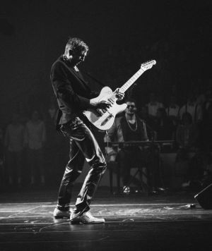

MEET THE BAND

Lexi Stack
Lead Singer
Lexi grew up in Boston, raised on a mix of classic rock, soul, and indie electronica. She majored in Human-Computer Interaction at Tufts with a minor in Music Education. Her lyrics often explore themes of recursion, relationships, and digital disconnection — all delivered with raw emotional precision.

Jace Kernel
Back-up Singer and Base Guitar
Quinn Trace began as a signal processing major at Tufts, where he fell in love with the analog warmth of bass guitars and the digital depth of waveforms. Known for his ability to lock into complex time signatures while grounding the band's sound, Quinn builds bass lines like a nested function—clean, purposeful, and essential to execution.
Theo Byte
Lead Guitar
Theo is a self-taught guitarist who got his start playing in music clubs while studying software engineering at Tufts. His technical background shapes his approach to composition — he thinks of riffs as algorithms, structured and evolving with complexity.
Mira Loop
Drummer
Mira got her start drumming in metal bands while tinkering with electronics. A dual degree in Computer Engineering and Audio Design led her to design her hybrid kit — combining acoustic drums with pressure-sensitive MIDI pads and custom triggers.
Renn Scope
Keyboard
Renn studied music theory and machine learning at Tufts. He programs his own virtual instruments, designing soundscapes that blur the line between analog and algorithm. Every Rhythmic Recursion album features at least one track powered by his custom software synths.